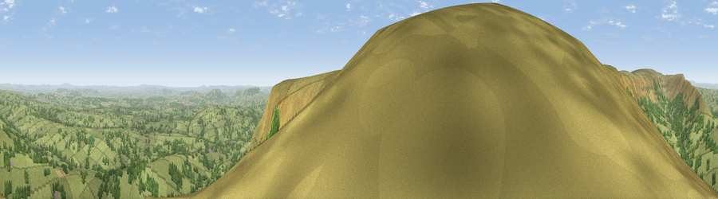

Viewpoint near Longtown
#1886 in England · top 5% of its area beats it · near LongtownWhere it is
The exact computed spot (SO 29038 30200). Click the marker for map links.
The view, rendered

A 360° render of this exact spot computed from the terrain model, tree cover and land cover — summer colours, afternoon light, calibrated against photographs of famous viewpoints. Real trees, hedges and buildings will differ in detail.
The panorama
Grey silhouette: terrain skyline in each direction (720 bearings, Earth curvature and refraction included). Dashed green: skyline with trees (+15 m) and buildings (+8 m) as obstacles. Blue strip: how far the ground is visible on each bearing.
Where the view opens
Wedge length = distance to the farthest visible ground on that bearing (vegetation-aware). Rings at 10, 25 and 50 km.
What fills the view
74% grassland · 24% woodland · 2% cropland
Angular shares of the visible panorama (visual magnitude), not map area. Landscape diversity 0.29 (0–1 Shannon).
Key numbers
More beautiful places nearby
The staircase of upgrades: each row has a higher view potential than everything closer. Driving times are estimates from straight-line distance, calibrated against real road routing — check an actual route before setting out.
| Place | Direction | Drive | Score |
|---|---|---|---|
| Viewpoint near Longtown | SE · 1 km | ~4 min | 78.7 |
| Viewpoint near Longtown | SSE · 3 km | ~7 min | 79.0 |
| Viewpoint near Clodock | SSE · 3 km | ~8 min | 79.6 |
| Black Hill | NNW · 5 km | ~11 min | 79.8 |
| Viewpoint near Craswall | NW · 8 km | ~16 min | 81.5 |
| Garway Hill | ESE · 15 km | ~27 min | 84.6 |
| Millennium Hill | ENE · 48 km | ~69 min | 86.9 |
| Worcestershire Beacon | ENE · 50 km | ~71 min | 87.1 |
51.96573, -3.03428 · source: screening · position refined by local search. Computed location — check access rights before visiting.